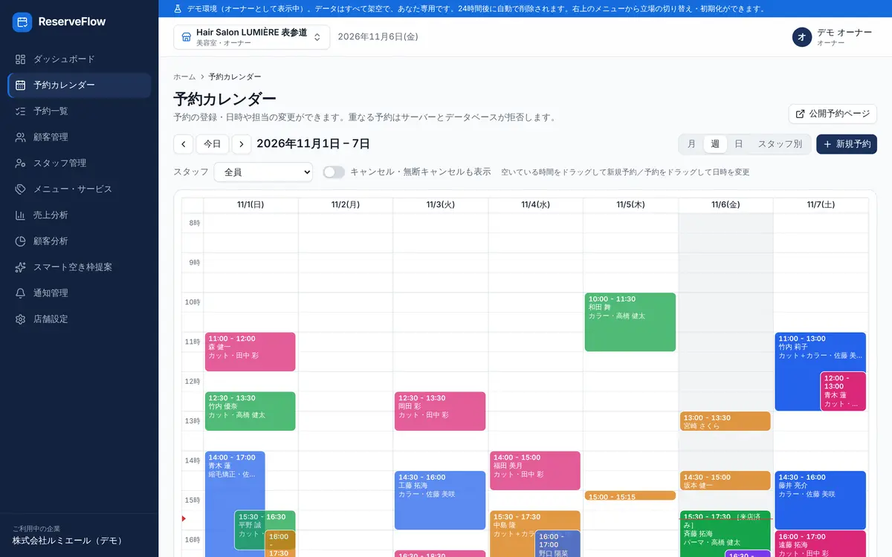
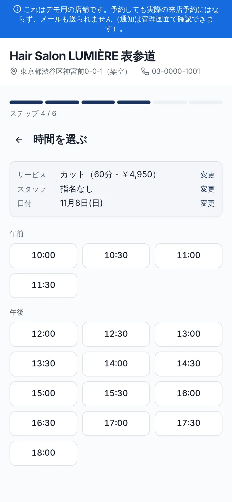

ReserveFlow
美容室や整体院など、複数の業種で使える予約・顧客管理システムです。
- Client
- 美容室・ネイルサロン・整体院・パーソナルジム・個人スクール・レンタルスペース
- Users
- オーナー・マネージャー・スタッフ（管理画面）
お客様（公開予約ページ） - Demo
- 登録不要。4業種の店舗を
訪問者ごとに作成

Overview
プロジェクト概要
予約・顧客・スタッフ・売上をまとめて管理する、クラウド型の予約システムです。業種の違いは設定とデータで表しているため、同じ仕組みのまま、さまざまなお店で使えるように設計しています。
画面に出る数値やインサイト、おすすめの理由は、すべて実際の予約データから計算しています。AI の API は使っていません。
Problem
想定した業務課題
- 予約を電話や紙の台帳で受けていて、同じ時間に予約が重なることがある
- スタッフの勤務や休憩、部屋・機材の空きまで考えて予約を調整するのに手間がかかる
- 無断キャンセルやリピートの状況を、数字として把握できていない
- 空いている時間をどう埋めればよいか、判断の材料がない
Solution
解決方法
- 同じスタッフ・設備の時間の重なり（前後の準備時間を含む）は、データベースの排他制約で拒否します。同時に予約が入っても、成功するのは1件だけです。
- 営業時間・勤務・休憩・休暇・設備をもとに空き枠を計算し、管理画面と公開予約ページで同じ判定を使っています。
- 売上・無断キャンセル率・リピート率を、期間と母数を明記したうえで表示します。
- 条件を満たす空き枠を探して重み付きのスコアで順位をつけ、計算した理由とともに管理画面で提案します。
Impact
導入効果の試算
スタッフ5名・月約300件の予約を受ける美容室で、予約の半数がWeb予約に移ると想定。人件費は店舗スタッフの時間単価 2,000円で換算。
- 削減できる作業時間
- 月 24時間月 36.5時間 → 月 12.5時間
- 年間の削減時間
- 288時間月 24時間 × 12か月
- 人件費に換算すると
- 約58万円 / 年月 約4.8万円（時間単価 2,000円）
| 作業（1か月あたり） | 導入前 | 導入後 | 削減 |
|---|---|---|---|
| 電話での予約受付・日程調整1件約4分 → 半数がお客様自身の公開予約ページからの予約に | 20時間 | 10時間 | −10時間 |
| 台帳の記入と重複の確認紙の台帳 → カレンダーに直接登録、重なりはシステムが拒否 | 5時間 | 1時間 | −4時間 |
| 前日のリマインド連絡1件ずつ連絡 → 自動作成された通知の送信状態を確認するだけに | 7.5時間 | 1時間 | −6.5時間 |
| 月次の売上・顧客の集計手集計 → ダッシュボードと分析画面 | 4時間 | 0.5時間 | −3.5時間 |
| 合計 | 36.5時間 | 12.5時間 | −24時間 |
※ 実際の導入実績ではなく、上の想定条件にもとづく試算です。実際の効果は、業務の内容や運用によって変わります。 リマインドのメール送信には、メール配信サービスのAPIキーの設定が必要です。
Features
主要機能
- 予約カレンダー
- 月・週・日・スタッフ別の表示。カレンダーから登録し、ドラッグで日時や担当を変更。
- 顧客管理
- 来店回数・利用額・無断キャンセル率。新規・リピーター・VIP・休眠の区分（基準は設定で変更可能）。
- スタッフ・サービス
- 勤務スケジュール・休憩・休暇、担当サービス、必要な設備、前後の準備時間。
- 公開予約ページ
- スマートフォン向けの8ステップ。予約の確認・変更・キャンセルにも対応。
- ダッシュボード・分析
- KPI 8種とグラフ。売上、無断キャンセル、リピート率（30・60・90日）の分析。
- スマート空き枠提案
- 10の条件を満たす枠を探し、4項目のスコアで順位づけ。おすすめの理由を表示。
Screens
スクリーンショット


Tech
使用技術
- Next.js 16（App Router）
- TypeScript
- PostgreSQL（Supabase）
- Tailwind CSS 4
- shadcn/ui
- FullCalendar
- Recharts
- React Hook Form・Zod
- date-fns
- Vitest
- Playwright
- Vercel
- 企業と店舗を分け、データは RLS で企業ごとに分離しています。
- オーナー・マネージャー・スタッフの権限は、画面・サーバー・データベースの3段で判定しています。
- 通知（確定・変更・キャンセル・リマインド）は記録と送信状態を管理し、二重送信を防いでいます。メールの送信はAPIキーを設定した場合のみで、デモでは内容を画面に表示します。
Links
デモ・ソースコード
- デモreserveflow-umber.vercel.app（新しいタブで開きます）
- GitHubgithub.com/tono3679-creator/reserveflow（新しいタブで開きます）
登録は不要です。トップページで業種を選んで「〜で試す」を押すと、訪問者専用の4業種の店舗が作られます。右上のメニューから、オーナー・マネージャー・スタッフの立場を切り替えられます。